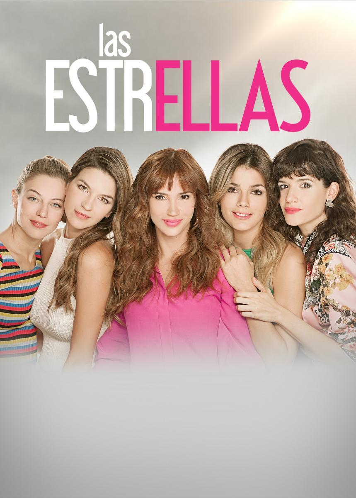
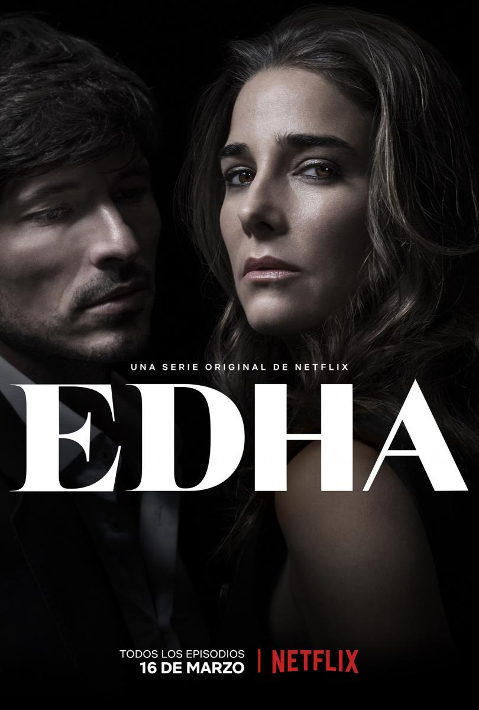
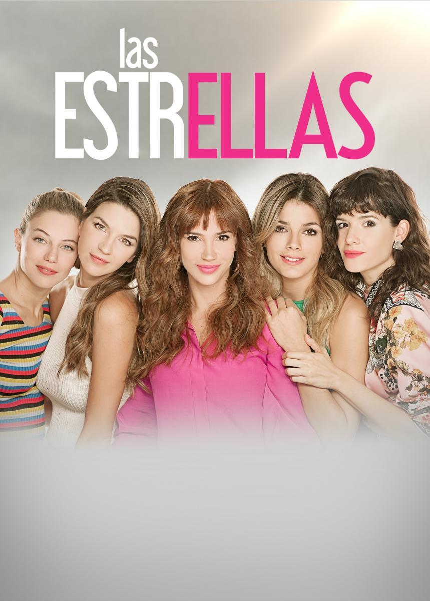
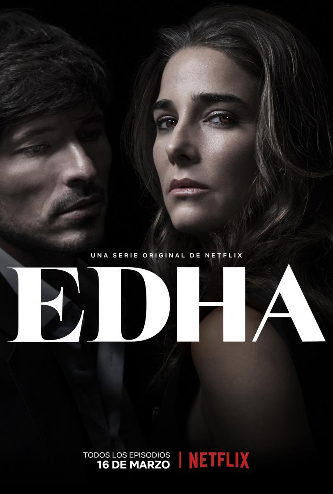
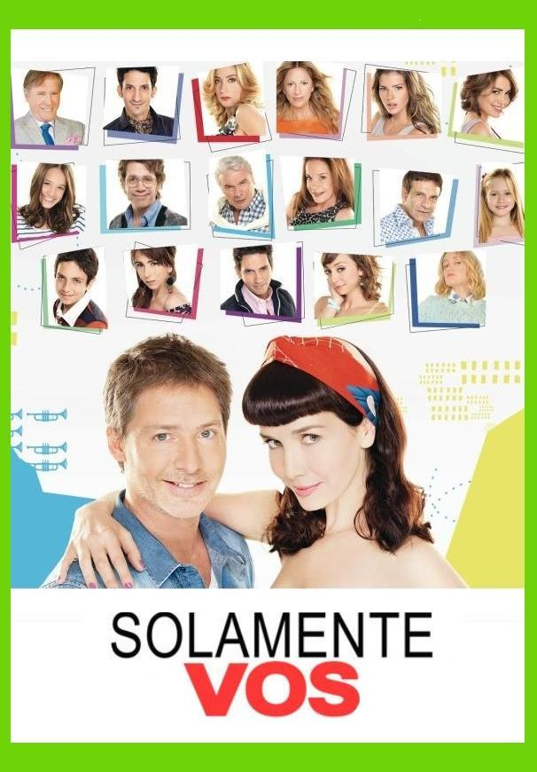
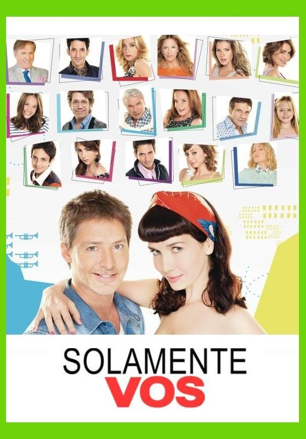
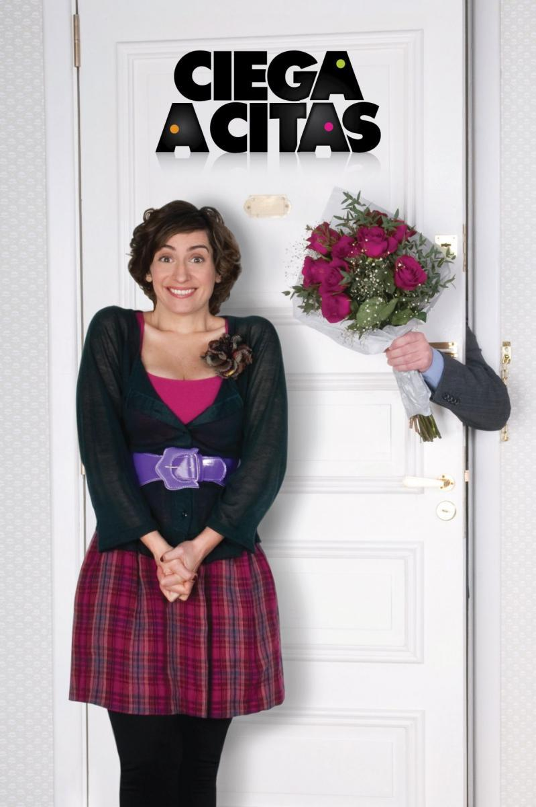
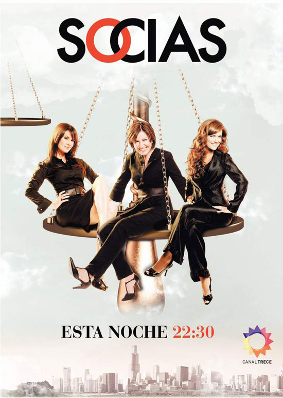
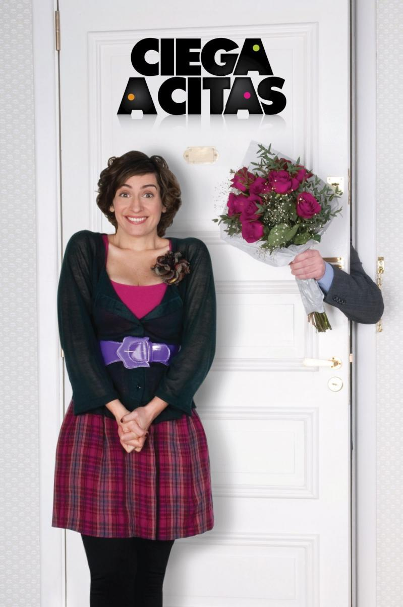
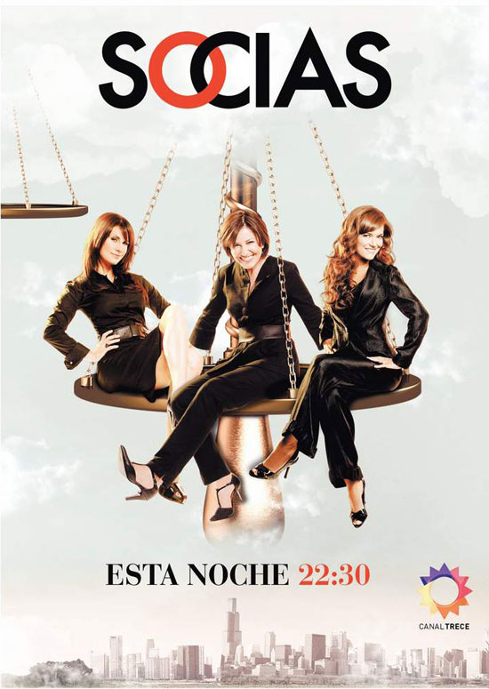

 

 




Marta Betoldi is an actress, screenwriter, and playwright from Argentina, currently residing in Madrid. She is the creator of series such as *Socias*, *Ciega a Citas*, *Cuando me Sonreís*, *Daños Colaterales*, *Edha*, *Esperanza Mía*, *Solamente Vos*, *Las Estrellas*, *El Host II*, *La Villa*, *Planners II*, and *Escribiendo el Fin del Mundo*.
Creator of “Betty la Fea: The Story Continues”, a series derived from the original work written by Fernando Gaitán, and head writer of the screenwriting team. Creator of the original series “Simply Alicia” for Netflix Global. She also serves as Content Development Coordinator for Gosua Spain and provides script doctoring services for Latin American production companies. She is a member of the International Emmy Awards jury.
It is important to note that she has a catalog of original series, both exclusively written by her and co-created with renowned authors within the industry, such as David Serrano, Fernando Castets, Julio Rojas, Paula del Fierro, and Esteban del Campo.


.png)